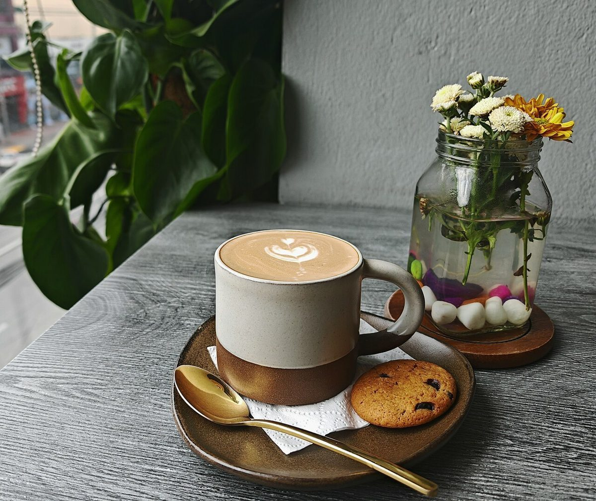

制作側の連想
お絵かきボードの部位を、配置図にしてみる
このサイトは、液晶のお絵かきボードを図にしたつもりで作りました。六つの部位に番号をふり、上の図と並べています。制作側の連想で、お店の理念・由来とは無関係です。実際の製品の仕様を示すものでもありません。
凡例
六つの部位
- 1書き込み面液晶パネルペンでなぞると線が浮かぶ、いちばん大きな面。
- 2タッチペン先の細い棒面に当てて、線を描くための棒。
- 3ペンホルダー本体の脇の溝使わないときにペンを収めておく細長いくぼみ。
- 4消去ボタン赤い丸いボタン押すと、描いた線をひとまとめに消すボタン。
- 5ロックスイッチスライド式のつまみ消去ボタンを押しても消えないよう、止めておくための切り替え。
- 6電池ぶた裏面の小さなふた小さな電池を収める、本体の裏側のふた。
写真イメージ
コーヒーとパンの写真





写真はコーヒーとパンのイメージです。お店のものではなく、お店で提供している商品を示すものでもありません。
ご案内
お店のこと(確認できたものだけ)
| 所在地 | 〒289-2152 千葉県匝瑳市松山1138-1 |
|---|---|
| 電話 | 準備中 |
| 営業時間 | 準備中 |
| 定休日 | 準備中 |
| ご予約 | 準備中 |
| 駐車場 | 準備中 |
| SNS | Instagram @okito_coffee |